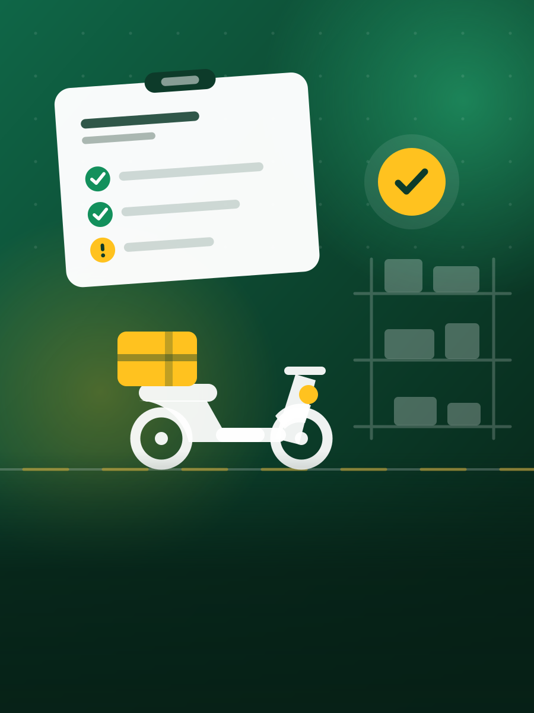

Preoperacional, limpieza y temperatura: registrados el mismo día, medidos por proyecto y listos para auditoría.
Escribe la contraseña con la que vas a entrar de ahora en adelante.
¿El enlace no sirve? Pide uno nuevo desde el ingreso. Cada solicitud anula la anterior: sirve únicamente el último correo.